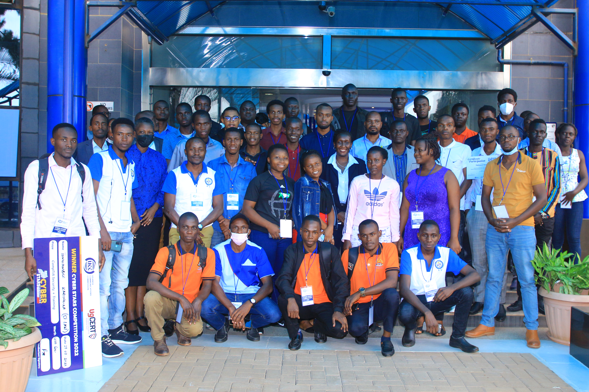
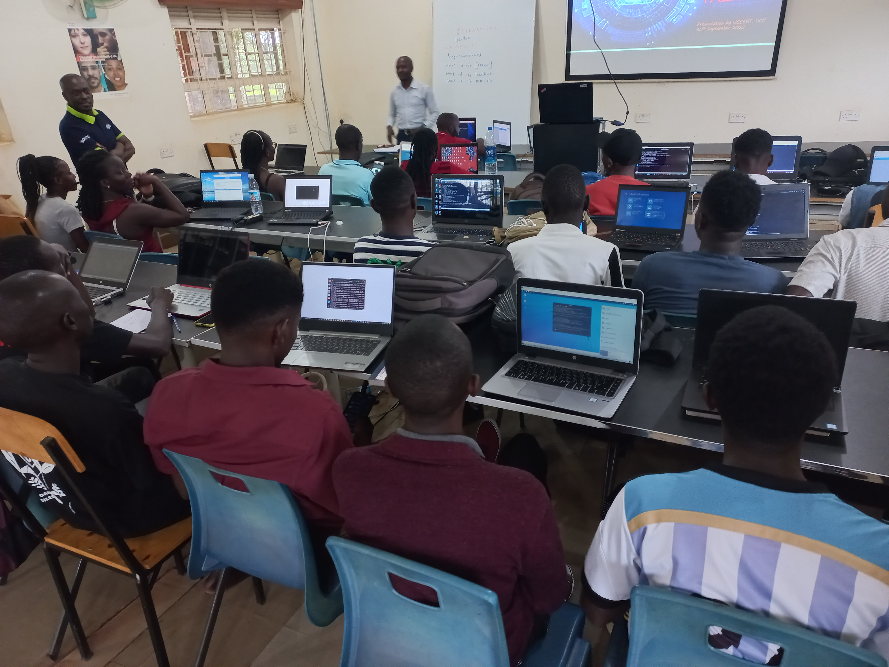

NetHub is an Innovation & Technology Hub helping communities build practical technology and cybersecurity skills.
Prof. Joseph Mugerwa
Patron and Advisor
A PhD candidate and IT professional, Prof. Mugerwa brings teaching experience to NetHub and its practical approach to cybersecurity learning.
Strategic Engagements and Outreach

Graduates become facilitators, creating a sustainable cycle of knowledge transfer within their communities.

Our programs equip urban youth with in-demand digital skills, fostering employability and opening pathways to new career opportunities.

We establish digital literacy hubs in refugee settlements, providing essential access to technology and training for underserved populations.